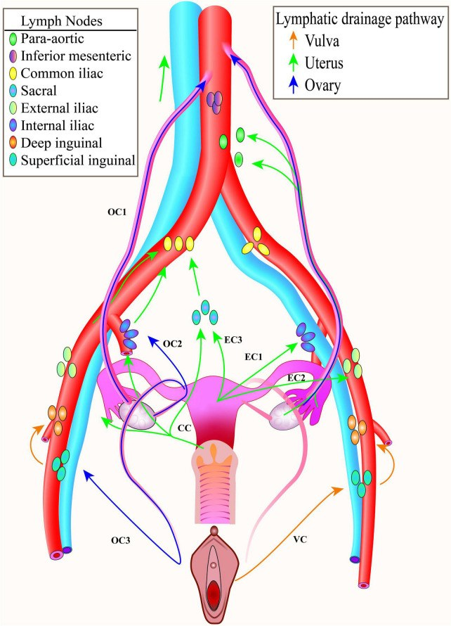
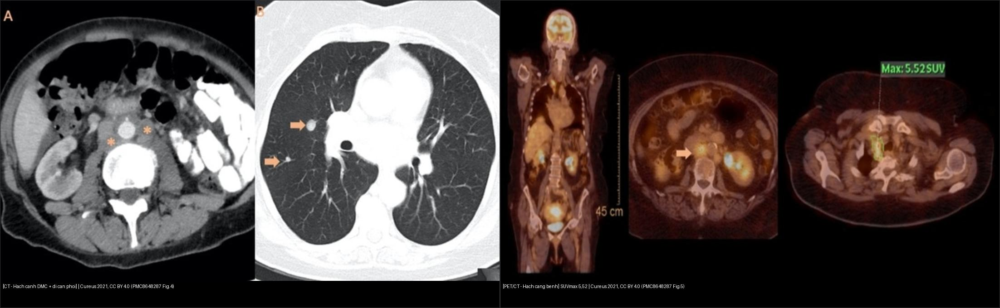
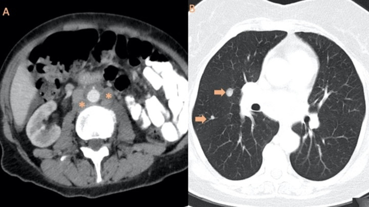
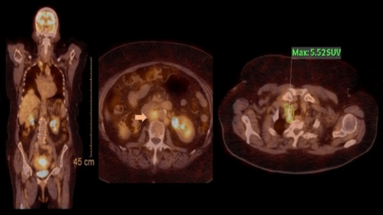
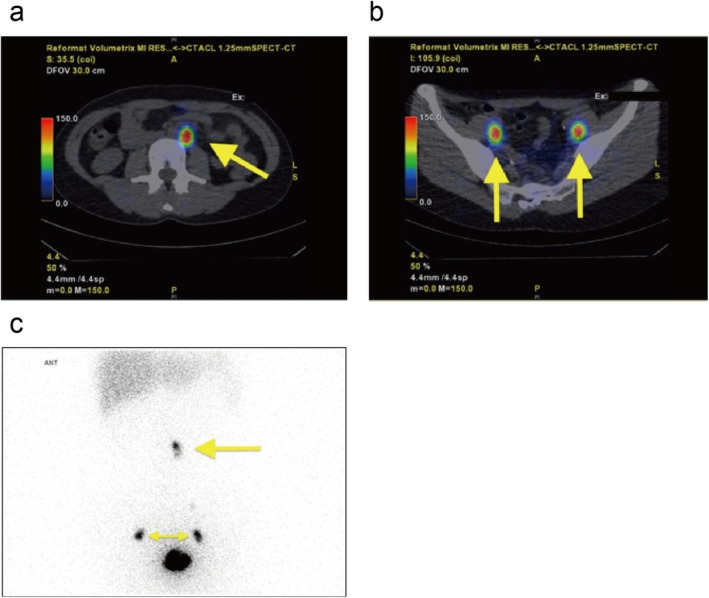
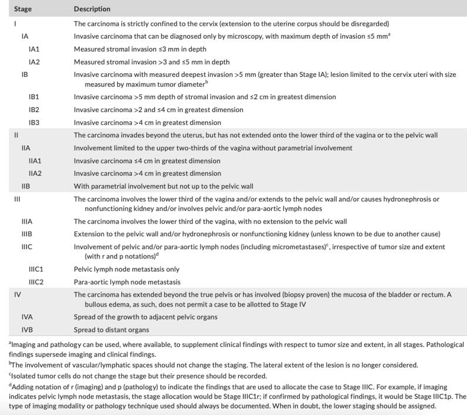
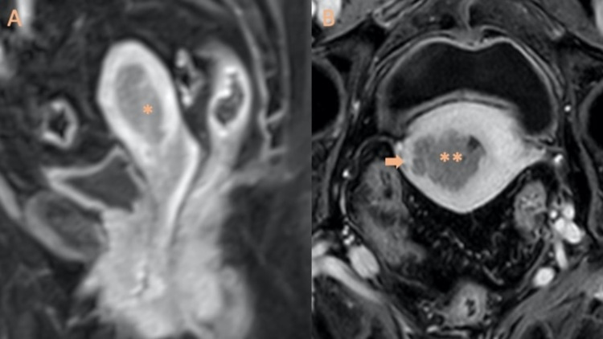

572 — Hạch trong ung thư phụ khoa: hạch gác (SLN), hạch chậu–cạnh ĐMC & PET-CT / Nodal staging in gynecologic cancer
Tags: pattern:hach-di-can vung:hach-chau vung:hach-canh-dmc score:FIGO protocol:PET-CT protocol:SLN-ICG
Mức chắc chắn (certainty): tổng hợp y văn (literature synthesis) — nhóm tự biên từ y văn mở (sơ đồ dẫn lưu bạch mạch, ca SLN cạnh ĐMC, ca PET/CT, phân tích gộp SLN-ICG), chưa gắn một ca nguyên văn đơn lẻ.
1. Tổng quan bệnh học – cơ chế hình ảnh
- Vì sao hạch là “trạm gác” quyết định điều trị: tình trạng hạch chậu/cạnh động mạch chủ (para-aortic) đổi giai đoạn FIGO (thành IIIC1 / IIIC2), quyết định trường xạ trị, có/không nạo hạch và có/không hóa trị. Bỏ sót hạch dương = xạ thiếu trường → tái phát (ca quiz Ca 3).
- TẠI SAO mỗi cơ quan dẫn lưu tới một nhóm hạch khác nhau (nền tảng định vị):
- Buồng trứng: theo mạch trứng (gonadal vessels) → cạnh ĐMC trước tiên (hiếm khi hạch chậu) → vì thế u buồng trứng di căn cạnh ĐMC.
- Thân tử cung: theo dây chằng tròn + mạch buồng trứng → cả hạch chậu và cạnh ĐMC (hai đường).
- Cổ tử cung: theo dây chằng rộng/chu cung → hạch thông (obturator), chậu trong/ngoài, trước xương cùng, phần trên theo mạch buồng trứng → cạnh ĐMC.
- Âm hộ: → hạch bẹn–đùi (inguinofemoral).
- Vì thế một tổn thương nhỏ ở cổ tử cung hoàn toàn có thể có hạch gác CẠNH ĐMC (không chỉ hạch chậu) — xem Ca 3.
- TẠI SAO tiêu chuẩn “kích thước hạch” không đủ: hạch kích thước bình thường vẫn có thể chứa vi di căn (micrometastasis); hạch to lại có thể do viêm/phản ứng. Trên CT, hạch được coi “nghi” khi trục ngắn > 10 mm (hạch chậu/chủ), nhưng độ nhạy chỉ ~30–57%, độ đặc hiệu ~92–98%.
- TẠI SAO FDG-PET/CT có vai trò nhưng bị hạn chế: tế bào u tăng đường phân → ¹⁸F-FDG tập trung (SUVmax). Nhưng độ nhạy thấp với hạch nhỏ/vi di căn: trong nghiên cứu SENTIREC-endo (n = 227, 23% có di căn hạch), PET/CT Se 56% (95% CI 42–68), Sp 91% (86–94), PPV 64%, NPV 87%; riêng cạnh ĐMC Sp 97% nhưng Se vẫn 56%; kích thước hạch và SUVmax chỉ có giá trị trung bình (AUC-ROC ~ 0,7). Phân tích gộp khác báo Se/Sp ~72% / ~94%. SUVmax cao (≥ 12,7) gắn tiên lượng xấu hơn.
- TẠI SAO hạch gác (sentinel lymph node — SLN) hiệu quả: tracer tiêm quanh u/cổ tử cung đi theo đúng đường bạch mạch của tế bào u tới hạch chặng một (first-echelon); siêu phân đoạn mô bệnh (ultrastaging — cắt lát 2 mm) tìm được vi di căn mà cắt ngang thường bỏ sót. Số liệu SLN-ICG ở ung thư nội mạc nguy cơ thấp–trung bình (gộp 14 nghiên cứu, 2.117 BN): tỷ lệ phát hiện SLN 95,6% (92,4–97,9), hai bên 76,5% (68,1–84,0); tỷ lệ hạch dương 9,6% (G1–2) – 11,8% (G1–3); NPV 100% (G1–2) và 99,2% (kể cả G3).
- Định nghĩa gánh nặng hạch (để chốt giai đoạn): ITC (chỉ tế bào đơn lẻ) ≤ 0,2 mm / < 200 tế bào**; **vi di căn > 0,2–2,0 mm / 200–2.000 tế bào; đại di căn (macrometastasis) > 2,0 mm. SLN dương đại thể → nạo hạch chậu ± xạ; vi di căn → xử trí tùy thể (thường hạ giai đoạn + cân nhắc xạ bổ trợ).
- TẠI SAO ung thư cổ tử cung giai đoạn sớm vẫn phải tìm hạch: ở FIGO 2009 IA–IIA, di căn hạch gặp 14,8% — nghĩa là ~1/7 ca “sớm” đã có hạch → SNNS được đưa vào để giảm biến chứng (phù bạch mạch, lymphocele) mà không bỏ sót hạch.
2. Mẫu hình + chẩn đoán phân biệt theo đường dẫn lưu (Gamut)
- Theo cơ quan gốc: buồng trứng → cạnh ĐMC → nách/thượng đòn; tử cung → chậu + cạnh ĐMC; cổ tử cung → chu cung/thông/chậu trong + cạnh ĐMC; âm hộ → bẹn–đùi.
- Theo tầng hạch trên hình ảnh: chậu (bịt/thông, chậu ngoài, chậu trong, trước xương cùng) vs cạnh ĐMC (dưới/R2, quanh động mạch chủ) vs trung thất/thượng đòn (lan xa).
- Theo tính chất: hạch hoại tử/hình cầu mất rốn mỡ (nghi hơn) vs hạch vỏ dày, giữ rốn mỡ (có thể viêm) vs hạch nhỏ bình thường nhưng chứa vi di căn (chỉ SLN/ultrastaging phát hiện).
- Gợi nhớ tiếp cận: “hạch nhìn thấy phải đặt đúng dòng bạch mạch của cơ quan gốc” — một hạch to không đúng đường dẫn lưu thường là lành tính (phản ứng); một hạch nhỏ đúng đường dẫn lưu vẫn phải coi nghi.

Đường dẫn lưu: buồng trứng (mũi tên xanh dương) → cạnh ĐMC; tử cung (xanh lá) → chậu + cạnh ĐMC; cổ tử cung (CC) → thông/chậu trong + cạnh ĐMC; âm hộ (cam) → bẹn–đùi. Nguồn: Front Med 2022 (PMC9276931), CC BY 4.0.3. Bảng so sánh phân biệt (ma trận đối chiếu)
| Thực thể / phương thức (entity) | Hình ảnh điển hình | Chốt vào (rule-in) | Chốt loại (rule-out) | Gợi ý xác nhận |
|---|---|---|---|---|
| MRI tiểu khung (T2W + DWI/ADC) | Hạch hình cầu, mất rốn mỡ, DWI sáng/ADC thấp, > 10 mm trục ngắn | DWI sáng + mất rốn mỡ + tương ứng dòng dẫn lưu | Hạch giữ rốn mỡ, đồng tín hiệu → nghĩ lành | Đối chiếu chuỗi DWI + CT/PET |
| CT bụng–chậu cản quang | Hạch > 10 mm trục ngắn, bờ viền/hoại tử; đánh giá phổi–gan cùng lúc | Hạch to đúng dòng + hoại tử trung tâm | Se chỉ 30–57% → CT âm tính KHÔNG loại trừ | CT ngực tìm trung thất/thượng đòn |
| ¹⁸F-FDG PET/CT | Hạch tăng SUVmax; toàn thân một lần | SUVmax cao + hạch đúng dòng (Sp cạnh ĐMC 97%) | Se 56% ở hạch nhỏ/vi di căn → âm tính KHÔNG loại trừ | Định hướng nạo/xạ hạch dương; đối chiếu mô bệnh |
| SLN (ICG / ⁹⁹ᵐTc) | Hạch gác phát quang (ICG) hoặc bắt phóng xạ (SPECT-CT/gamma probe) | Hạch gác bắt tracer + siêu phân đoạn (cắt 2 mm) | Đã có hạch dương đại thể trên hình ảnh → SLN ít giá trị | NPV 99,2–100%, phát hiện hai bên 76,5% |
| Hạch phản ứng/viêm (mimic) | Hạch vỏ dày đều, giữ rốn mỡ, cùng bên ổ viêm | Giữ rốn mỡ + bối cảnh nhiễm trùng | Mất rốn mỡ + hoại tử → nghi ác | Kháng sinh/theo dõi; tránh “nạo hạch oan” |
| Lao/hạch viêm u hạt (mimic) | Hạch vôi hóa, hoại tử bã đậu, hai bên | Vôi hóa + bối cảnh lao | Hạch ác thường không vôi hóa dạng này | ADA/sinh thiết nếu cần phân biệt |

Trái: CT bụng cản quang — nhiều hạch cạnh ĐMC hoại tử () = FIGO IIIC2, kèm di căn phổi (mũi tên, hình B). Phải: PET/CT — hạch cạnh ĐMC + thượng đòn phải tăng chuyển hóa (SUVmax 5,52) trong bối cảnh nghi tái phát. Nguồn: Cureus 2021 (PMC8648287), CC BY 4.0. Ảnh ghép letterbox.*4. Protocol chụp + phân giai đoạn FIGO hạch
- MRI tiểu khung có DWI/ADC (b = 800–1000) là chuẩn đánh giá tại chỗ nội mạc/cổ tử cung; bổ sung CT bụng–chậu ± ngực cản quang để đánh giá hạch + di căn xa; PET/CT khi nguy cơ cao/hạch to trên CT/tái phát.
- Kỹ thuật SLN (ung thư nội mạc & cổ tử cung): tiêm ICG (hoặc ⁹⁹ᵐTc-phytate) quanh cổ tử cung (ca quiz tiêm 99mTc-phytate tại vị trí 2, 4, 8, 10 giờ); nội mạc: ICG tiêm quanh cổ tử cung (cervical injection) là chuẩn; đọc SPECT-CT ( ⁹⁹ᵐTc) hoặc camera huỳnh quang (near-infrared). Nguyên tắc: lấy mọi hạch gác + hạch nghi ngờ; nếu một bên không có SLN → nạo hạch bên đó; siêu phân đoạn cắt lát 2 mm + hóa mô miễn dịch (AE1/AE3).
- Tracer (định lượng): dị ứng thuốc nhuộm xanh (blue dye) ~2%, còn ICG chỉ ~0,05% — ICG là lựa chọn an toàn, phát hiện hạch chậu tốt hơn xanh.
- FIGO hạch (điểm chốt báo cáo):
- Ung thư cổ tử cung (FIGO 2018): IIIC1 = hạch chậu dương; IIIC2 = hạch cạnh ĐMC dương (r = hình ảnh, p = mô bệnh; kích thước u không còn đổi nhóm khi có hạch).
- Ung thư nội mạc (FIGO 2023): IIIC1 = hạch chậu; IIIC2 = hạch cạnh ĐMC.
- Ghi rõ — hạch chậu hay cạnh ĐMC và bên; micrometastasis/ITC có thể đổi giai đoạn ở một số hệ.
- Giới hạn kỹ thuật cần nhớ: lymphoscintigraphy chỉ thấy hạch bắt tracer, không thấy hạch bị u “bít” hoàn toàn (non-visualized) → luôn có hạch nghi ngờ dự phòng.
flowchart TD
A[Ung thu phu khoa - danh gia hach] --> B{"MRI + CT (DWI) nguy co cao?"}
B -->|Khong| C["SLN mapping (ICG/99mTc) trong mo"]
B -->|Co| D[Them FDG-PET/CT toan than]
C --> E{Hach gac duong tinh?}
D --> F{Hach to/SUV cao dung dong?}
F -->|Co| G[Nao hach chu - xac dinh IIIC1/IIIC2]
F -->|Khong| C
E -->|Co| G
E -->|Khong| H{NPV 99-100 - mot ben khong co SLN?}
H -->|Co| I[Nao hach ben do bo sung]
H -->|Khong| J[BSLT theo FIGO - theo doi]
5. Biến thể bình thường và cạm bẫy
- PET âm tính KHÔNG loại trừ hạch: Se chỉ ~56% ở hạch nhỏ/vi di căn — đừng “an tâm” vì PET âm.
- Hạch to do viêm/phản ứng (PID, sau mổ, lao) dễ bị đọc “di căn” → dựa vỏ dày đều + giữ rốn mỡ + bối cảnh.
- “Thỏa mãn tìm kiếm” (satisfaction of search): tìm được hạch chậu rồi dừng → bỏ sót hạch cạnh ĐMC (nhất là cổ tử cung — dẫn lưu tới cạnh ĐMC qua mạch buồng trứng). Ca quiz Ca 3 là ví dụ kinh điển: hạch cạnh ĐMC bị bỏ sót → xạ thiếu trường.
- SLN “không thấy bên nào” → phải nạo hạch bên đó, đừng bỏ trống vì “không có hạch gác”.
- Hạch non-visualized do bị u bít không xuất hiện trên lymphoscintigraphy → luôn lấy thêm hạch nghi ngờ.
- Kích thước không đáng tin: hạch < 10 mm vẫn di căn**, hạch **> 10 mm có thể lành — cần DWI/ADC + mô bệnh.
- Di căn ngoài hạch (thượng đòn/trung thất) đổi giai đoạn IVB ở nhiều hệ — đọc ngực trên CT/PET.
- SUVmax trên hạch có thể bị ảnh hưởng bởi viêm/huy động tủy — không chốt một mình SUVmax.
6. Tự lượng giá — Blind Quiz
Ca 1 — Nữ 54 tuổi, K nội mạc. Trên CT bụng–chậu có gì? Vì sao quan trọng?

- Gợi ý lâm sàng (clinical context): carcinoma nội mạc, đau lưng nhẹ.
- Câu hỏi: Mô tả tổn thương ở (A) và (B)? Giai đoạn FIGO nào? Ảnh B thuộc giai đoạn nào?
Bấm để hiện đáp án (findings + chẩn đoán)
- Dấu hiệu (findings): (A) nhiều hạch cạnh động mạch chủ hoại tử/hình cầu (*) — trục ngắn > 10 mm; (B) CT ngực: nốt phổi hai bên (mũi tên) = di căn.
- Chẩn đoán (diagnosis): (A) hạch cạnh ĐMC dương = FIGO IIIC2; (B) di căn phổi = giai đoạn IVB — vì vậy phải quét ngực, không chỉ chậu.
- Nguồn ảnh: Cureus 2021 (PMC8648287) Fig. 4, CC BY 4.0.
Ca 2 — PET/CT toàn thân: hạch nào tăng chuyển hóa, SUVmax bao nhiêu? Ý nghĩa?

- Hỏi: Vì sao PET/CT được dùng ở đây? SUVmax 5,52 nói lên điều gì?
Bấm để hiện đáp án (findings + chẩn đoán)
- Dấu hiệu (findings): hạch cạnh ĐMC tăng chuyển hóa (mũi tên, axial) và hạch thượng đòn phải với SUVmax 5,52 (ảnh phải).
- Chẩn đoán (diagnosis): tái phát bệnh (recurrence) sau hóa-xạ trị — PET/CT toàn thân phát hiện ổ ngoài khung chậu mà CT thường bỏ sót; SUVmax cao gắn tiên lượng xấu hơn.
- Nguồn ảnh: Cureus 2021 (PMC8648287) Fig. 5, CC BY 4.0.
Ca 3 — Nữ 34 tuổi, K cổ tử cung T1a2 (FIGO 2018) muốn giữ sinh sản. SPECT-CT thấy hạch gác ở đâu? Vì sao quyết định đổi? (ca nguyên văn — phản biện)

- Hỏi: Hạch gác nằm những đâu? Nếu chỉ lấy hạch chậu thì nguy cơ gì?
Bấm để hiện đáp án (findings + chẩn đoán)
- Dấu hiệu (findings): tiêm 99mTc-phytate quanh cổ tử cung (2, 4, 8, 10 giờ); SPECT-CT: (a) hạch gác cạnh ĐMC dưới trái bắt phóng xạ; (b) hai hạch bịt (obturator) hai bên; (c) coronal. Gamma probe: bịt phải 22.410 cps, bịt trái 17.860 cps, cạnh ĐMC trái 6.881 cps. Cắt lát 2 mm: đại di căn 2,5 mm ở hạch cạnh ĐMC, vi di căn 1,1 mm ở hạch bịt trái.
- Chẩn đoán (diagnosis): K cổ tử cung đã có hạch cạnh ĐMC (đại di căn) + hạch bịt (vi di căn) → chuyển từ cắt cổ tử cung giữ sinh sản sang cắt tử cung cải biên + nạo hạch chậu + hóa-xạ trị (gồm trường cạnh ĐMC). Nếu chỉ lấy hạch chậu → bỏ sót hạch cạnh ĐMC → xạ thiếu trường → tái phát.
- Phản biện: đây là ca đơn lẻ, giai đoạn rất sớm (T1a2) — nhưng chính vì thế nó cho thấy SLN đổi hoàn toàn chiến lược điều trị; cần thận trọng khi ngoại suy cho đại trà.
- Nguồn ảnh: J Obstet Gynaecol Res 2026 (PMC13281751) Fig. 2, CC BY 4.0.
Ca 4 — Bảng phân giai đoạn cổ tử cung: hạch chậu và cạnh ĐMC đổi giai đoạn gì?

- Hỏi: Hạch chậu dương → giai đoạn nào? Hạch cạnh ĐMC dương → giai đoạn nào?
Bấm để hiện đáp án (findings + chẩn đoán)
- Dấu hiệu (findings): bảng FIGO 2018 — nhóm III: “involves pelvic and/or para-aortic lymph nodes”; IIIC1 = pelvic lymph node metastasis only; IIIC2 = para-aortic lymph node metastasis.
- Chẩn đoán (diagnosis): hạch chậu dương = IIIC1; hạch cạnh ĐMC dương = IIIC2; chú thích nguồn: dùng r (imaging) hay p (pathology) để phân loại, và kích thước u không còn đổi nhóm khi đã có hạch.
- Nguồn ảnh: Gynecol Oncol Rep 2025 (PMC12399259) Fig. 5 (nguồn gốc: Bhatla 2021), CC BY-NC-ND 4.0 — giữ nguyên bản.
Ca 5 — MRI nội mạc: u khu trú trong buồng tử cung. Đây là giai đoạn nào? Có hạch chưa?

- Hỏi: Hai ảnh này minh họa điều gì về xâm lấn cơ và hạch?
Bấm để hiện đáp án (findings + chẩn đoán)
- Dấu hiệu (findings): (A) khối nội mạc (*) khu trú trong buồng tử cung (giai đoạn IA); (B) ảnh khác: u (dấu sao kép) xâm lấn nửa ngoài cơ tử cung (mũi tên) = IB.
- Chẩn đoán (diagnosis): ung thư nội mạc giai đoạn I (chưa hạch trên hình ảnh) — nhấn mạnh: xâm lấn cơ quyết định IA/IB, còn hạch là trục riêng (IIIC); hình ảnh “chưa thấy hạch” không thay thế đánh giá hạch mô bệnh.
- Nguồn ảnh: Cureus 2021 (PMC8648287) Fig. 1, CC BY 4.0.
Bài liên quan chéo
- 500 – Tổng quan Vú & Sản phụ khoa
- 525 – Ung thư nội mạc & cổ tử cung: FIGO trên MRI
- 520 – U xơ cơ tử cung, adenomyosis & nội mạc
- 530 – Khối phần phụ O-RADS, dermoid & xoắn
- 535 – Ung thư buồng trứng, phúc mạc & u Krukenberg
- 528 – Dị dạng tử cung bẩm sinh
Ảnh
572_linh-mach-chau_so-do_PMC9276931-Fig1.jpg,572_hach-canh-DMC_CT_PMC8648287-Fig4.jpg,572_hach-PET-CT_PMC8648287-Fig5.jpg,572_stage-I-MRI_PMC8648287-Fig1.jpg,572_SLN-SPECT-CT_PMC13281751-Fig2.jpg,572_FIGO-co-tu-cung_bang_PMC12399259-Fig5.jpg,composite_hach-CT-vs-PET.jpg. Nguồn + giấy phép từng ảnh trongimages/CREDITS.md.
Không dùng để chẩn đoán độc lập khi chưa có người hướng dẫn.